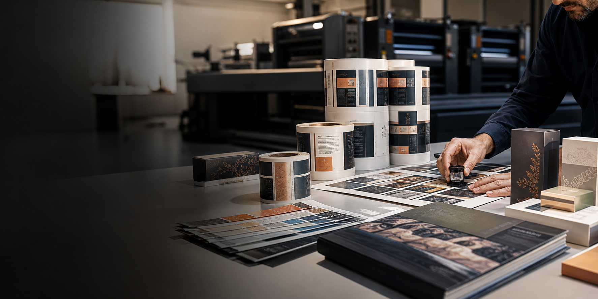
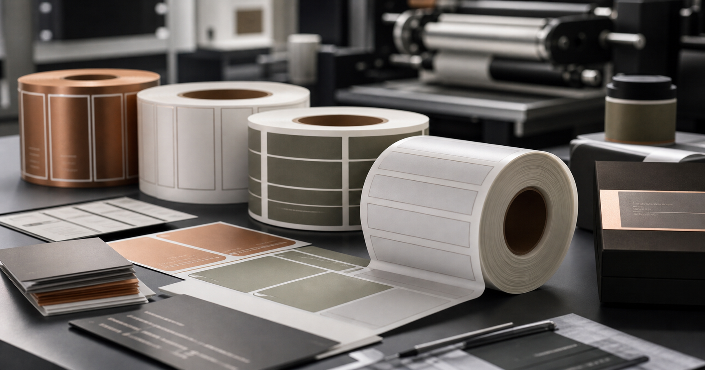

Impresión técnica con mirada comercial
Material impreso para empresas que necesitan orden, presencia y continuidad.
Indugraf desarrolla etiquetas, piezas corporativas y publicaciones para clientes que valoran un buen acabado, una atención clara y una ejecución consistente en cada reimpresión.

Etiquetas, catálogos, piezas editoriales y soporte corporativo
Una presentación profesional también vende capacidad operativa.
Etiquetas industriales
Packaging
Catálogos
Libros y memorias
Servicios principales
Un sitio de imprenta debería mostrar materia, terminación y oficio; no solo bloques de texto.
Reorganicé la página para que la fotografía y el contenido transmitan valor percibido, capacidad técnica y una sensación de marca B2B más confiable.

Etiquetas y trazabilidad
Producción de etiquetas en rollo y en plano para entornos donde la legibilidad y la repetición importan.
Ideal para agroindustria, alimentos, logística, manufactura y cualquier operación que necesite identificación clara y buena presentación.
Soporte comercial
Catálogos, carpetas, fichas y piezas corporativas.
Material impreso para áreas comerciales, presentaciones, ferias, visitas técnicas y documentación institucional.
Editorial corporativo
Libros, memorias, manuales y publicaciones formales.
Piezas con mejor presencia, selección material más cuidada y un tratamiento visual que eleva la percepción de marca.
Por qué esta versión es más fuerte
La diferencia entre una landing aceptable y una profesional suele estar en la dirección de arte.
El diseño anterior se apoyaba demasiado en ilustraciones genéricas y colores planos. Esta versión usa una paleta más madura, contrastes mejor controlados y fotografías que muestran textura, materialidad y contexto real de imprenta.
Grafito, marfil, cobre y tonos minerales para salir del look “template” y acercarse a un lenguaje premium-industrial.
Más aire, mejores escalas, menos cajas innecesarias y jerarquía enfocada en lectura comercial.
Las fotos ahora explican el rubro. Ya no son adorno: muestran muestras, acabados, revisión y productos impresos.

Aplicaciones
Un cliente debería poder imaginar su marca aquí sin esfuerzo.
Agroindustria, alimentos, manufactura, logística, instituciones y marcas que requieren piezas impresas con mejor control.
Levantamiento claro, orientación técnica, propuesta precisa y producción alineada al uso final del impreso.
Atención a empresas de Biobío, Ñuble, La Araucanía y otras zonas cercanas según requerimiento.
Preguntas frecuentes
Información breve y útil para acelerar la cotización.
¿Qué información conviene enviar para cotizar?
Medidas, cantidad, uso del material, soporte deseado, plazo y cualquier referencia visual o archivo disponible.
¿Pueden repetir trabajos anteriores?
Sí. Se puede trabajar sobre archivos existentes, muestras físicas o especificaciones definidas para mantener continuidad.
¿Atienden procesos de compra de empresas?
Sí. La propuesta está pensada para clientes que trabajan con compras, administración, marketing o producción.
¿Despachan fuera de Los Ángeles?
Se puede coordinar entrega local, retiro o despacho según volumen, destino y prioridad del proyecto.
Siguiente paso
Ahora sí estamos más cerca de una presencia visual profesional para la imprenta.
El siguiente nivel sería reemplazar los datos de ejemplo por información real de Indugraf y sumar fotografías propias de trabajos terminados, clientes o instalaciones.